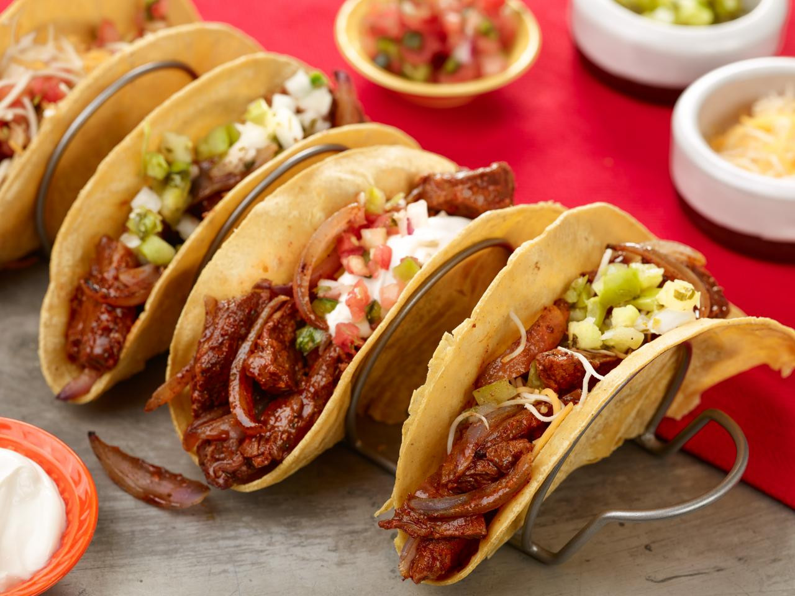

Tacos are a simple and flavorful dish made with seasoned meat, fresh toppings, and soft or crispy tortillas. Ground beef is cooked with onions and taco seasoning to create a savory filling, then spooned into warm tortillas. The tacos are topped with ingredients such as lettuce, tomatoes, cheese, and salsa for a fresh and satisfying combination of flavors and textures.
Quick to prepare and easy to customize, tacos are a popular meal for weeknights, gatherings, or casual dinners. Different toppings and fillings can be added to suit individual tastes, making them a versatile dish that everyone can enjoy.